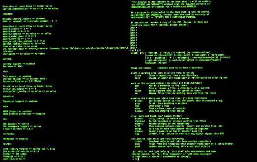

Resume
Wade Davenport

×
Professional Summary
Strong track record of residing in remote regions for long periods of time to educate and proselytize. Organized and dependable candidate successful at managing multiple priorities with a positive attitude. Willingness to take on added responsibilities to meet team goals.
Skills
- Python
- JavaScript
- HTML
- CSS
- R
- Japanese (Limited Working)
- Painting
- Roofing
- Plumbing
- Educational Leadership
- Building Maintenance
- Infrastructure Development
- Report Writing Abilities
Education
Graduated Highschool 2020
- 3.8 GPA
Working on a B.S. in Computer Science as Brigham Young University Idaho
- 4.0 GPA
- Expected Graduation 2027
Computing Team
- Company: BYU-Idaho Computing Team
- Position: Team Member
- Working with the BYU-Idaho Computing Team to create a basic web application
Professional Experience
Brigham Young University - Idaho Early Morning Custodian
- January 2024 - present
- Worked at odd hours to complete tasks
- Worked with a diverse number of personalities
- Assisted coworkers to help ger work done on time
Micheal Hatch Construction General Construction Laborer
- Loaded, Unloaded, and moved material to and from storage and production areas
- performed general construction work on bth residential and commercial building projects
- Assisted crew members with complex tasks requiring close teamwork and coordination to meet quality specifications
- Kept sites clean and organized to decrease accidents and increase overall productivity
Personal Experience
Missionary in California, Florida, and Japan
- July 2020 - September 2023
- Proselytized people and imparted knowledge of faith using strong public speaking and one-on-one discussions in Japanese
- Worked with all types of people with different views
- Learned how to work long hours in uncomfortable conditions within a tight budget
- Coordinated and led weekly bible studies and English lessons for members and those in the area
- Built relationships with local and international mission organizations for successful partnerships
Eagle Scout
- Fall 2016
- Planned and organized a group to paint the storm drains for the city